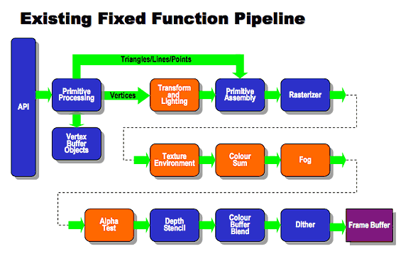
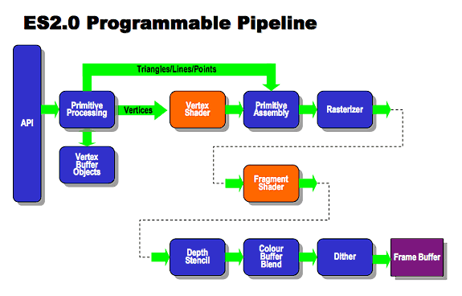

GLSL-概述
OpenGL ES 2.0 管线
OpenGL ES的版本主要有1.x，2.x，3.x等等，目前最流行、适用范围最广的是2.x。从2.0开始，OpenGL引入管线的概念，摒弃之前的fixed function的概念，加入shader可编程单元。


其中可操作的两个步骤分别是Vertex Shader和Fragment Shader。本文介绍的GLSL主要是用来编写这两种Shader的。
未经特殊说明，本文默认基于OpenGL 2.0x。
OpenGL ES Shading 概览
上面提到，Shader总共分两种：Vertex Shader和Fragment Shader。下文中的GLSL语法除非特殊说明，均适用于二者。
Vertex 处理器
Vertex处理器是一个可编程单元，它以顶点信息作为输入，进行相应的处理。运行在其上的代码被称为Vertex Shader。
Vertex Shader同一时间只能处理一个Vertex的信息，也无法处理需要多个Vertex信息的操作。
Fragment 处理器
Vertex处理器是一个可编程单元，它以Vertex处理器处理之后的结果作为输入，进行相应的处理。运行在其上的代码被称为Fragment Shader。
Fragment Shader不能修改Fragment的位置信息，也不能获取到其他Fragment的数据。
Fragment Shader处理后的数据用来更新内存或文理，进而显示到屏幕上。
转载请注明出处：GLSL-概述 - 专业点
欢迎关注我的公众号

推荐

公众号推荐
欢迎关注我的公众号一起愉快的交流。